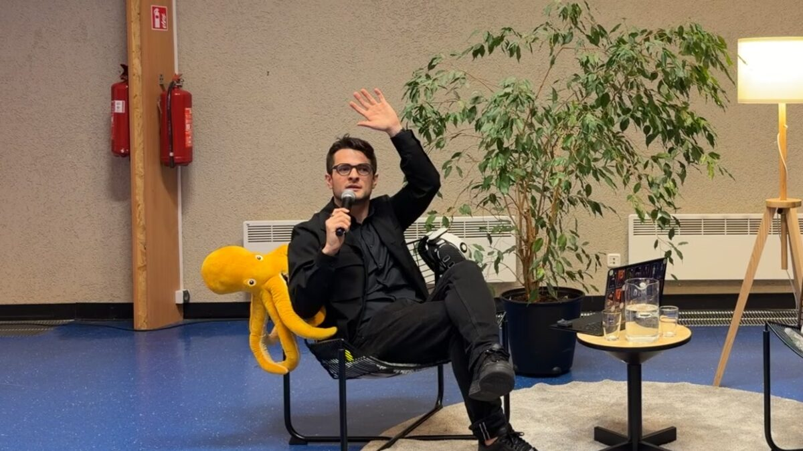

Kris Vas · laiškas tėvams · #06 · 2026-10
Apple ar Android? Ne geresnė ir ne blogesnė. Kitokia.
Ačiū. Atsakymas užskaitytas.
Kitame laiške pasidalinsiu, kiek mūsų atpažino.
Viskas, kas netilpo į laišką. Pradėk nuo lapo šaldytuvui. Likusi dalis palauks.
📋 Lapas🎬 2 video🔎 Ženklai🧭 Kur kreiptis🛡️ Saugumas📚 Lentyna📎 Šaltiniai

Disleksijos savaitė · Mokslo ir menų mokykla TAŠKIUS · Vilnius · 2026-10-06
📋 Smegenų priežiūros lapas
Operacinės sistemos skiriasi, priežiūra ta pati. Vienas A4 lapas savaitei: miegas, judėjimas, maistas, knyga. Apačioje dvi saugumo eilutės. Pažymėkit varnelę vakare, kartu su vaiku.
Spausdinant matysi tik lapą. Telefone: „Bendrinti → Spausdinti" arba išsaugok PDF.
🎬 58 sekundės: Apple ar Android?
Mokiniai paklausė, kas yra disleksija. Atsakiau telefonais: nė viena sistema nėra geresnė, abi daro tą patį, tik savąją reikia išmokti valdyti.
🎬 68 sekundės: kaip paaiškinti disleksiją pagal klasę
Tą pačią dieną rodžiau keturias versijas, nuo pirmoko iki dešimtoko:
→ Pirmokui: smegenys yra miestas. Kitiems į mokyklą veda greitkelis, o tau kol kas vingiuotas takelis. Jis dar nepramintas.
→ Trečiokui: raidės ir garsai šoka poroje ir kartais užmina vienas kitam ant kojų.
→ Penktokui: skaitymo tinklas dirba kitaip, ir treniruotės jį stiprina.
→ Dešimtokui: tai neurobiologinis skirtumas, dažnai paveldimas. Tinkami būdai padeda, kad netrukdytų gyventi.
Filmuota su Mokslo ir menų mokyklos TAŠKIUS leidimu. Ačiū Karolinai Taraševičei už kvietimą.
🔎 Ženklai, kuriuos pastebi namie
Tai ne diagnozė. Tai priežastis pasikalbėti su specialistu.
Skaito lėtai, stringa skaitydamas garsiai · skaito žemiau savo amžiaus · daug rašybos klaidų · painioja eilę (savaitės dienos, mėnesiai). NHS · B
Raidės šokinėja, skirtingo dydžio, netolygūs tarpai · nepatogiai laiko pieštuką, ranka greit pavargsta · papasakoja puikiai, o užrašyti nesiseka. ADDitude · C
Pameta ir pamiršta daiktus · nenustygsta, daug kalba, sunku palaukti eilės · svajoja, daro neatidumo klaidas. NHS · B
Prieš darant išvadas: daug mažų vaikų, ypač iki 5 metų, būna išsiblaškę ir pilni energijos. Tai gali būti nuovargis, nerimas ar stresas (NHS). Patikrink miegą, regą ir klausą. Ir svarbiausia: disleksija neturi nieko bendro su intelektu.
🧭 Kur kreiptis Lietuvoje
- Mokytojas. Paklausk, ar jis mato tą patį klasėje.
- Mokyklos Vaiko gerovės komisija. Su tavo sutikimu įvertina pirmiau ir gali skirti specialiojo pedagogo ar logopedo pagalbą.
- Pedagoginė psichologinė tarnyba (PPT). Išsamus ugdymosi poreikių įvertinimas. Eilės skiriasi: Vilniuje apie metus, Kaune apie 18 savaičių, Klaipėdoje apie mėnesį (LRT, 2026-08-17). Užsiregistruok anksčiau, net jei dar abejoji.
- Dėl dėmesio ir elgesio: šeimos gydytojas, o jis nukreips toliau, pas vaikų ir paauglių psichiatrą. Kaip tai veikia tavo poliklinikoje, paklausk registratūroje.
Lietuvoje disleksija oficialiai nenustatoma, dažniausiai rašomas „skaitymo ir rašymo sutrikimas" (LRT). Pagalbą tai gauti netrukdo.
🔧 Ta pati priežiūra visiems
6–12 metų vaikui 9–12 valandų, 3–5 metų 10–13 val. su poguliu. AASM 2016 · A
Vidutiniškai 60 min. per dieną, kad suprakaituotų (5–17 m.). PSO 2020 · A Vaikams su ADHD sportas gerino dėmesį ir savikontrolę, geriausiai kamuolio ir raketių žaidimai; tyrėjai sako, kad įrodymų kokybė ribota. Metaanalizė 2023 · B
Sveikas ir reguliarus maistas. Omega-3 poveikis ADHD mažas, o dieta nėra gydymas. Jei kas žada, kad dieta išgydys, verta suabejoti. B
20 minučių kasdien: skaito vaikas, skaitai tu arba audioknyga kartu su knyga rankose. Audioknygos padeda ir vaikams su disleksija, nors tyrimų dar nedaug. C
🛡️ Ir antivirusinė: saugumas internete
Spalio 16 d. lrytas.lt laidoje „Gyvenu, ne skrolinu" su psichologe Lina Žemaityte-Kirkman kalbėjom apie vaikų saugumą internete. Laida dar montuojama; kai išeis, nuorodą atsiųsiu laišku.
1. Vienas sakinys. „Jei kas nutiks internete, aš tavo numeris vienas. Nesakysiu „ar aš tau nesakiau". Pasakysiu: ačiū, kad išdrįsai." JAV tyrime iš 13–20 metų jaunuolių, kurių nuotraukas AI pavertė netikromis nuogomis, tėvams pasakė tik 34 % (Thorn, 2025).
2. Šeimos slaptažodis. AI lengvai nukopijuoja balsą. Jei kas paskambina tėvų balsu ir prašo pinigų ar kur nors ateiti, vaikas paklausia slaptažodžio. Niekur jo neužrašykit.
3. Prieš keliant vaiko nuotrauką, paklausk jo. Lina sakė paprastai: jei mokom vaiką sakyti „ne", patys turim klausti „ar galima".
Visas gidas su klausimais pagal amžių: krisvas.lt/skaitmeninis-saugumas
Jei vaiką jau šantažuoja: nemokėkit, išsaugokit žinutes ir ekrano nuotraukas, praneškit policijai ir svarusinternetas.lt. Pavojus dabar: 112. Vaikui pasikalbėti: Vaikų linija 116 111. Jaunimui: Jaunimo linija 0 800 28888.
📚 Mano lentyna
Mano asmeninis sąrašas, ne redakcija. Niekas už vietą čia nemokėjo.
- Tiffany James, „Suprask mane" (lietuviškai išleido Lietuvos audiosensorinė biblioteka, 2026). Knyga apie tai, ko reikia vaikui su disleksija. Pristatyta Neskaitymo festivalyje, kuriame kalbėjau. labiblioteka.lt
- LRT: „Štai kodėl esu Mike, o ne Michael". Kaip Mike'as Jonesas augo su disleksija ir kodėl jam nepatinka žodis „sutrikimas". Skaityti
- Mano pokalbis Žinių radijo laidoje „Neįrėminti". Apie diktantą su 30 klaidų ir kelią, kurį radau. Žiūrėti
- Neskaitymo festivalis. Kasmetinis renginys Kaune apie disleksiją ir kitokį skaitymą, nemokamas. neskaitymofestivalis.lt
- Nessy (angliškai). Mike'o Joneso sukurtos skaitymo programos ir trumpi video vaikams apie disleksiją. Dalis mokama. nessy.com
📎 Šaltiniai
- NHS, Dyslexia · nhs.uk
- NHS, ADHD in children and young people: symptoms · nhs.uk
- ADDitude, Dysgraphia in children · additudemag.com
- Paruthi ir kt., AASM sutarimas dėl vaikų miego, J Clin Sleep Med, 2016 · PMC
- Bull ir kt., PSO 2020 fizinio aktyvumo gairės, BJSM, 2020 · PMC
- Zhu ir kt., fizinis aktyvumas ir ADHD vaikų vykdomosios funkcijos, tinklinė metaanalizė, Frontiers in Public Health, 2023 · PMC
- Bloch ir Qawasmi, omega-3 ir ADHD, metaanalizė, 2011 · PubMed
- LRT, PPT eilės, 2026-08-17 · lrt.lt
- Thorn, Deepfake Nudes & Young People, 2025-03-03 · thorn.org
Šį puslapį ir laišką padėjo paruošti AI; istorija, video ir mintys mano. Esu Robotikos Akademijos, BrAIn Club ir ExoClass bendraįkūrėjas, todėl apie būrelius kalbu ne iš šono. Šiame puslapyje jokio būrelio nerekomenduoju. Pastebėjai klaidą? Parašyk.
Privatumas: anoniminė statistika be slapukų. Microsoft Clarity įsijungia tik paspaudus „Leisti". Privatumo politika ·